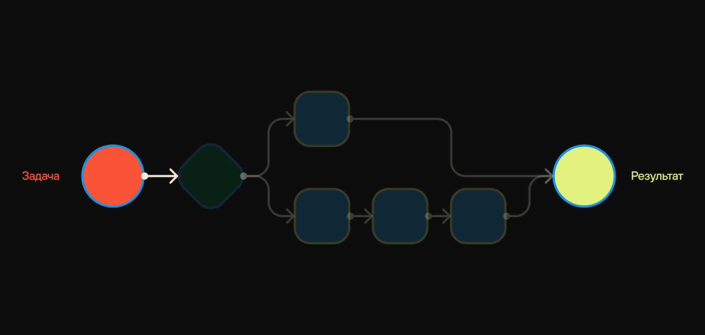

Современные цифровые продукты всё реже существуют в условиях полной предсказуемости. Пользователь больше не следует строго заданному пути — он исследует, переключается между задачами, действует импульсивно или, наоборот, вдумчиво и нестандартно.
Для дизайнеров это означает сдвиг парадигмы: вместо проектирования одного «идеального сценария» приходится создавать систему, способную выдерживать вариативность поведения. Именно здесь на первый план выходят недетерминированные сценарии — подход, который позволяет учитывать неопределённость как часть пользовательского опыта, а не как проблему.
Что такое недетерминированные сценарии
Недетерминированные сценарии — это такие пользовательские пути, в которых результат не задан заранее жёсткой логикой. Вместо линейного «шаг 1 → шаг 2 → шаг 3» пользователь получает пространство вариантов, где его действия, контекст и даже случайность влияют на итоговый опыт. Это особенно актуально для современных цифровых продуктов, где поведение пользователей сложно предсказать, а сами системы становятся всё более адаптивными.

Почему детерминизм больше не работает
Классические UX-подходы строились на контроле: дизайнер продумывает идеальный путь и ведёт пользователя по нему. Но в реальности:
- пользователи действуют нелинейно,
- цели могут меняться в процессе,
- контекст (устройство, время, состояние) влияет на поведение,
- продукты становятся сложнее и многослойнее.
Жёсткие сценарии начинают ломаться — и именно здесь недетерминированность становится преимуществом.
Когда использовать (и когда нет)
Подходит, если:
- продукт сложный или растущий,
- есть разные типы пользователей,
- важна исследовательская или креативная активность,
- используется персонализация.
Осторожно, если:
- критичны ошибки (например, финансы, медицина),
- пользователь ждёт чёткого сценария,
- продукт очень простой и линейный.